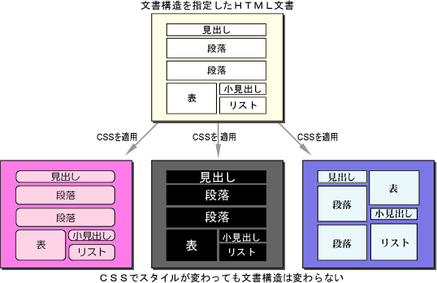

Git とは一言でいうと「分散型バージョン管理システム」のことで、ファイルのバージョン管理ができるツールのことです。
でも、「バージョン管理」って？？と想像のつかないひとのために、「バージョン管理」とはソースコード（プログラミング言語で書いた命令文）をはじめとしたファイルの変更履歴を管理すること。
何かしらの開発でバージョン管理をすることで、過去に行った変更箇所の確認、特定時点の内容に戻す、などの作業を可能にします。だから、複数人でやるゲーム開発なんかは必須の機能です。
そしてGitHubとは、Gitの仕組みを利用して開発プロジェクトのソースコードを保存・公開できるようにしたウェブサービスの名称です。
HTMLとはHyper Text Markup Language の略称で文字、画像、表、リンクなど、Webサイトに必要な部品を配置するためのプログラミング言語です。
だからHTMLだけを使うと貧相なことになってしまいます。そこで使うのがCSS。CSSは欠かせないスタイルシート言語。
スタイルシート言語とは、プログラミング言語とは違ってWebページの見た目を変えるための言語です。デザインを変更して見やすくできます。

よくわかるHTML＋CSS3の教科書 第二版